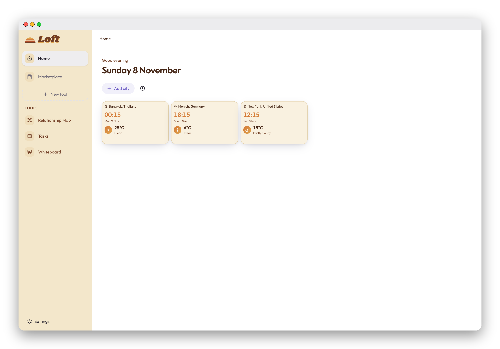
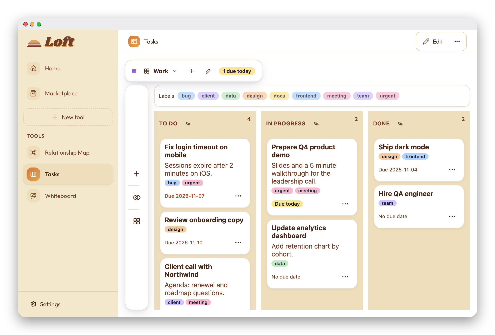
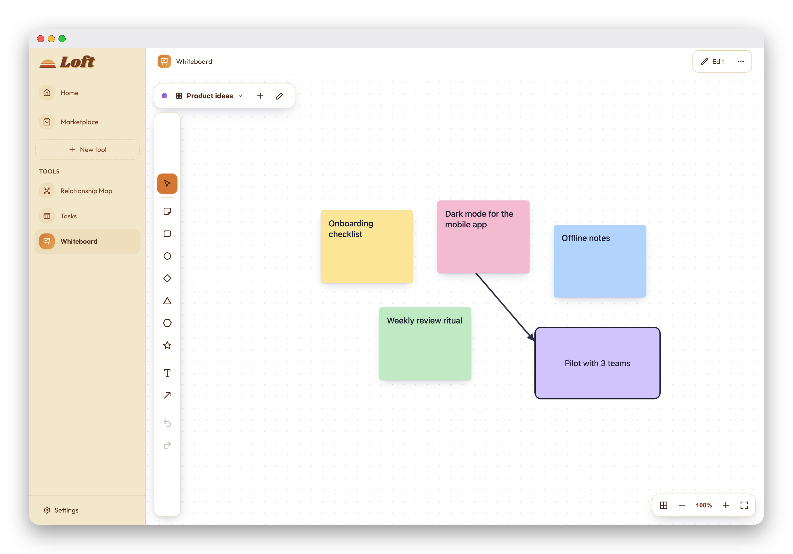
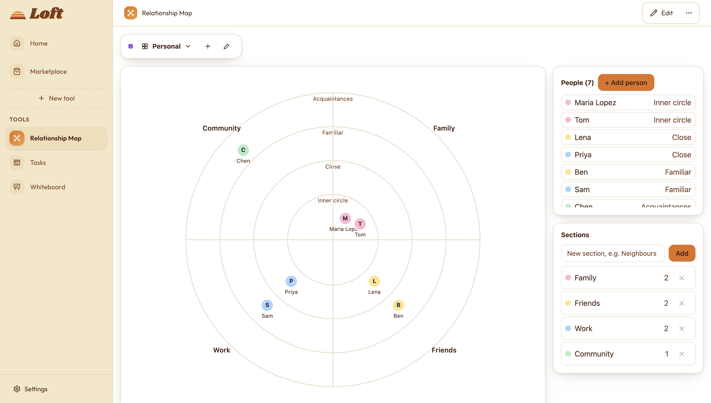
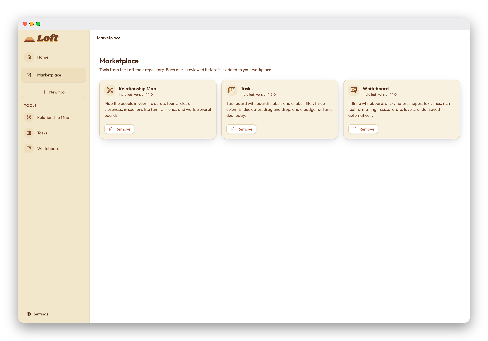

Small tools, made by describing them.
Loft is a desktop app for the little tools you need every day. Describe what you want, Claude builds it, and it runs on your computer with its data kept locally.

What Loft does
Each tool is a small, self-contained app. You can build your own or install ones other people have made.
Everything is local
Tools, their data and your settings live on your computer. There is no account and nothing is synced.
Create tools with AI
Name a tool and describe what it should do. Claude writes it, and you refine it by describing changes.
Review before anything is added
See a live preview and the source files first. Nothing is installed until you approve it.
Install from the Marketplace
Install, update and remove tools from a public catalog. Every file is checked against its checksum.
Sandboxed tools
Each tool runs in its own frame. It can only read and write its own data, and it can't reach the internet.
Built-in tools
Three tools come from the Marketplace. Each one is a normal tool you can change, remove or replace.




How it works
Making a tool takes three steps.
-
Name it and describe it For example: “Save recipes with ingredients and cooking time, and search them by name.”
-
Review the preview Try the tool, then open the Files tab to read the source before approving.
-
Use it, and keep refining Describe a change and Loft updates the tool. Your data stays where it was.
Privacy and data
Loft is built so your tools and data stay with you.
- Your data stays on your computer. Each tool has its own database file. The last five snapshots are kept before a change.
- Your API key is encrypted with the operating system's keychain. Loft needs it to create and change tools.
- What is sent to Anthropic: when you create or change a tool, your description and the tool's source code. Your tool data is never sent.
- Network use: the home page fetches time and weather from Open-Meteo for the cities you add. The Marketplace downloads tools from GitHub.
Getting started
Loft is open source. Requirements: Node.js 20 or newer and macOS. The full guide is in the README.
git clone https://github.com/paul-wieland/loft.git
cd loft
npm install
npm run dev